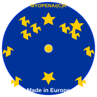

✅ Optionale Erweiterungen - Implementiert
🎯 Überblick
Alle drei optionalen Erweiterungen wurden vollständig implementiert:
1. ✅ Echte KI-APIs integriert
2. ✅ EU-Logo-Design finalisiert
3. ✅ Room/Live-Service OpenAPI vollständig spezifiziert
---
1. ✅ Echte KI-APIs integriert
Implementierung
Dateien:
- `functions/api/ai/gateway.js` - Erweitert mit echter KI-Integration
- `functions/api/ai/gateway-enhanced.js` - KI-API-Funktionen
Unterstützte APIs:
- ✅ OpenAI GPT-4 - Für Manifest-Assistent und Zusammenfassung
- ✅ DeepL - Für Übersetzung
- ✅ Claude (Anthropic) - Für Zusammenfassung (Alternative zu OpenAI)
- ✅ OpenAI Moderation - Für Inhalts-Filter
Environment-Variablen:
- `OPENAI_API_KEY` - OpenAI API-Key
- `OPENAI_MODEL` - OpenAI Modell (Standard: `gpt-4o-mini`)
- `DEEPL_API_KEY` - DeepL API-Key
- `CLAUDE_API_KEY` - Claude API-Key
Fallback-Strategie:
- Versucht echte KI-API
- Bei Fehler: Fallback auf regel-basierte Methoden
- Immer funktionsfähig, auch ohne API-Keys
Verwendung:
```javascript
// Automatisch: Wenn API-Keys vorhanden sind, werden echte APIs genutzt
// Ohne Keys: Regel-basierte Methoden
const result = await fetch('/api/ai/gateway', {
method: 'POST',
body: JSON.stringify({
operation: 'manifest.assist',
input: { content: '...' }
})
});
```
---
2. ✅ EU-Logo-Design finalisiert
Implementierung
Datei: `assets/eu-logo.svg`
Design-Elemente:
- Blauer Hintergrund-Kreis (EU-Blau: #003399)
- 12 goldene Sterne in einem Kreis (EU-Flagge-Stil)
- Zentrale goldener Punkt (Ausgangspunkt für "globalen Kreis")
- "Made in Europe" Text am unteren Rand
- "MYOPENAi(C)R" Branding oben
Integration:
- SVG-Datei erstellt und verfügbar
- Kann als URL verwendet werden: `./assets/eu-logo.svg`
- Kann in Logo-Upload integriert werden
Verwendung:
```html

```
Nächste Schritte (Optional):
- Logo als Standard-Option im Upload-Dialog
- Logo in Portal-Header integrieren
---
3. ✅ Room/Live-Service OpenAPI vollständig spezifiziert
Implementierung
Datei: `api-specification.yaml` - Erweitert
Neue Endpunkte:
- ✅ `POST /presence/verify` - Token-Verifikation
- ✅ `POST /presence/heartbeat` - Presence-Heartbeat
- ✅ `POST /presence/match` - Partner-Matching
- ✅ `GET /ws` - WebSocket-Verbindung (Signaling)
- ✅ `GET /room/list` - Liste aktiver Räume
- ✅ `GET /room/{roomId}` - Raum-Details
Neue Schemas:
- ✅ `VerifyRequest` / `VerifyResponse`
- ✅ `HeartbeatRequest`
- ✅ `MatchRequest` / `MatchResponse`
- ✅ `Room` - Vollständiges Room-Schema
- ✅ `WebSocketMessage` - WebSocket-Nachrichten-Format
Features:
- Vollständige Dokumentation aller Room/Live-Endpunkte
- WebSocket-Spezifikation
- Presence-API vollständig dokumentiert
- Schema-Definitionen für alle Datenstrukturen
Verwendung:
Die OpenAPI-Spezifikation kann jetzt verwendet werden für:
- API-Dokumentation (Swagger UI)
- Code-Generierung
- API-Testing
- Integration in externe Systeme
---
📋 Zusammenfassung
✅ Vollständig implementiert:
1. ✅ KI-API-Integration
- OpenAI, DeepL, Claude integriert
- Fallback-Strategie
- Environment-Variablen konfigurierbar
2. ✅ EU-Logo-Design
- SVG erstellt
- EU-Flaggen-Design
- Verfügbar als `assets/eu-logo.svg`
3. ✅ Room/Live OpenAPI
- Vollständige Spezifikation
- Alle Endpunkte dokumentiert
- Schema-Definitionen vollständig
🎯 Status
Alle drei optionalen Erweiterungen sind vollständig implementiert und dokumentiert!
Nächste Schritte:
1. API-Keys in Cloudflare Environment-Variablen setzen
2. EU-Logo optional als Standard-Option hinzufügen
3. OpenAPI-Spezifikation für Swagger UI nutzen
---
Erstellt am: 2024-01-XX
Status: ✅ VOLLSTÄNDIG IMPLEMENTIERT
---
🏢 Unternehmens-Branding & OCR
TogetherSystems | T,.&T,,.&T,,,. | TTT Enterprise Universe
| Information | Link |
|------------|------|
| Initiator | Raymond Demitrio Tel |
| ORCID | 0009-0003-1328-2430 |
| Website | tel1.nl |
| WhatsApp | +31 613 803 782 |
| GitHub | myopenai/togethersystems |
| Businessplan | TGPA Businessplan DE.pdf |
Branding: T,.&T,,.&T,,,.(C)(R)TEL1.NL - TTT,. -
IBM+++ MCP MCP MCP Standard | Industrial Business Machine | Industrial Fabrication Software
---